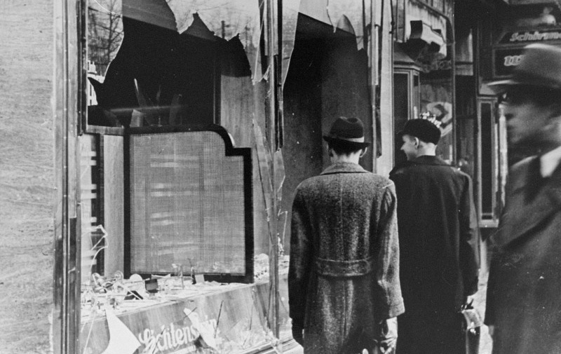
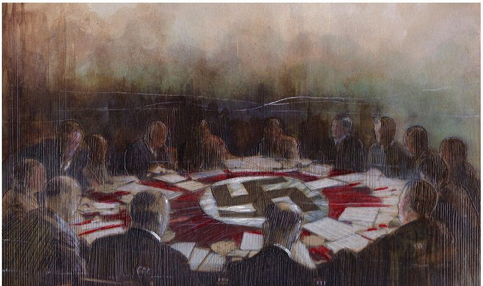

Le 20 janvier 1942, quinze hauts fonctionnaires du Parti nazi et de l'administration allemande se réunissent dans une villa de Wannsee, dans la banlieue de Berlin, pour discuter de la mise en œuvre et de la coordination de ce qu'ils appellent « la Solution finale à la question juive ».
L'image est un lien cliquable qui renvoie vers un site apportant plus de précisions.
dhhfcxunyef,exfh


dhhfcxunyef,exfh